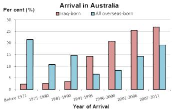

Australia is a multicultural country. It is known for welcoming migrants from all over the world. But are asylum seekers welcomed over the years?
This dataset focuses on displaying the migration rates of Iranians and Iraqis per year, and where are they situated in NSW. Over the decades, these countries have been a target of gruesome attacks. Today, those countries are still a target for bombings and destruction. Hence the reason for this increase in immigration to Australia.
In the given data, we have concluded that Iraqis who arrived between 2011 and 2016 tend to situate around Fairfield. It can be assumed that this is due to the Sydney housing prices. Another factor influencing the movement of migrants depends on where their existing community is located.
The Mapbox file shows that most migrants are located in Sydney’s West, and statistically that is where most Iraqi and Iranian migrants have settled, dating back from the first migration wave around the 1950s.
Iranians, on the other hand, do not mix with the Iraqis and this is understandable, due to the conflicts back in their homelands, and they reside in the Parramatta area. Between 2011 and 2016 there has been an increase of migrant flow, but Australia’s migration reforms have kept the number lower than the previous decades.
The following images show the trend flows in 2011 and 2016 respectively.
2011 2016
Compared to 62 per cent of the total overseas-born population, 43.6 per cent of the Iraq-born people in Australia arrived in Australia prior to 2001. Among the total Iraq-born in Australia at the 2011 Census, 25.5 per cent arrived between 2001 and 2006 and 26.9 per cent arrived between 2007 and 2011.

Compared to 62 per cent of the total overseas-born population, 46.1 per cent of the Iran-born people in Australia arrived in Australia prior to 2001. Among the total Iran-born in Australia at the 2011 Census, 17.2 per cent arrived between 2001 and 2006 and 30.1 per cent arrived between 2007 and 2011.